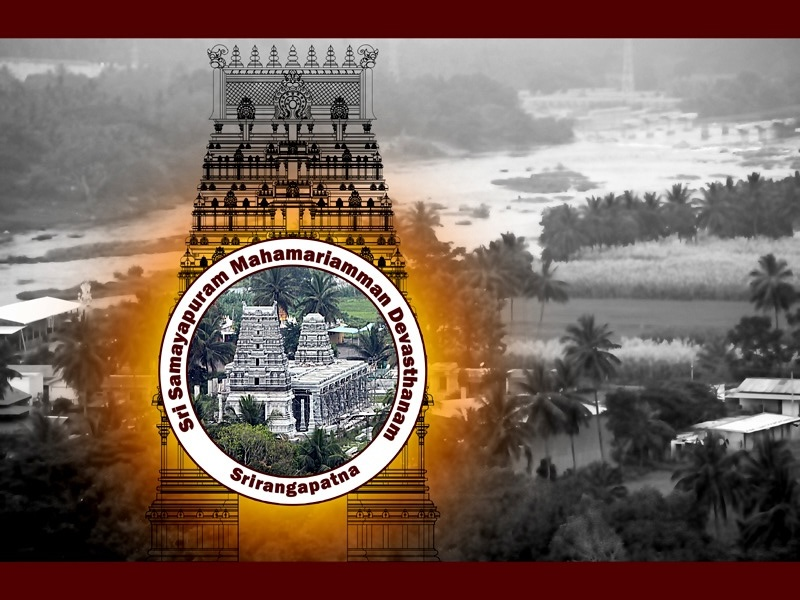
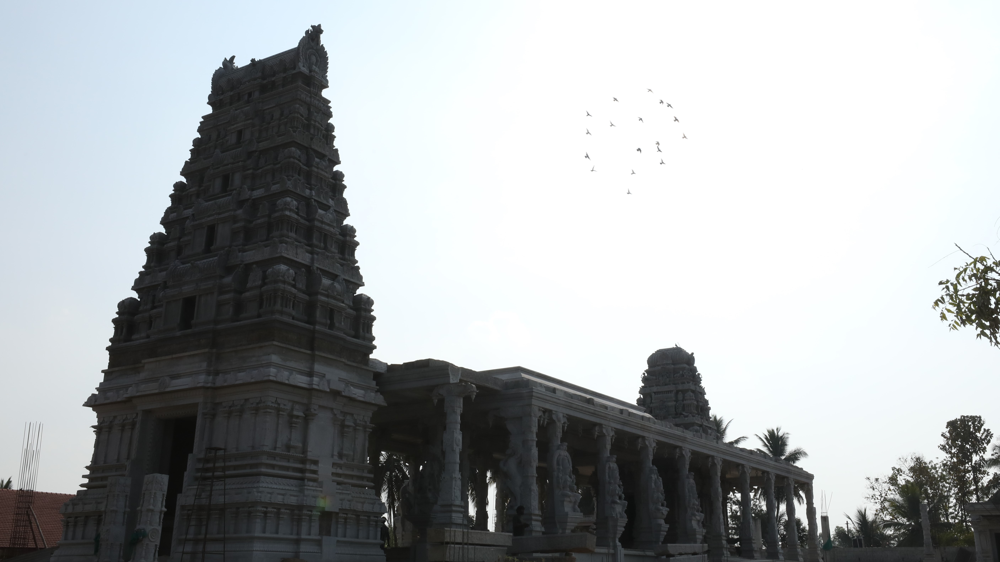
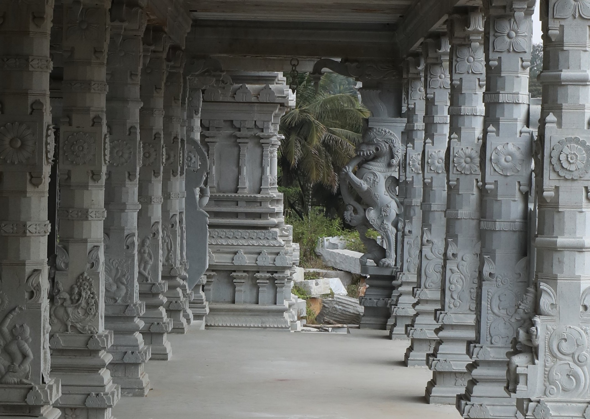
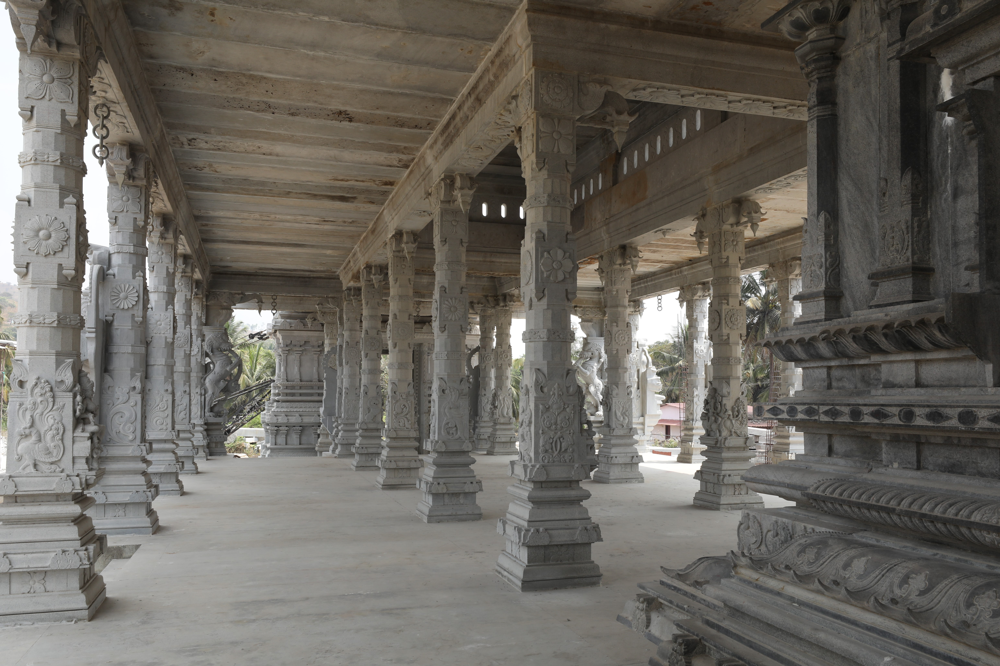
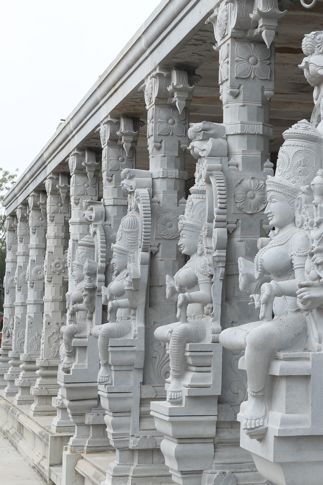
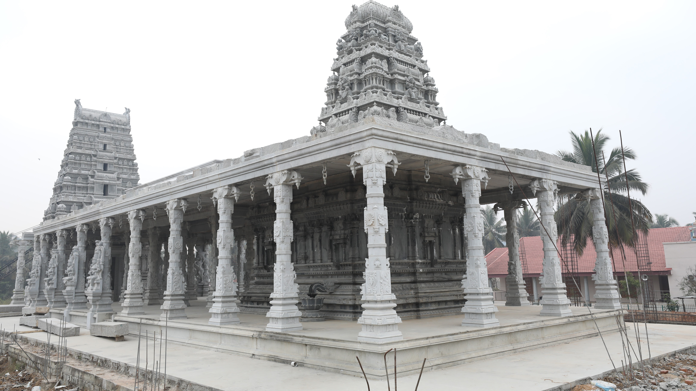

Vision & Mission
To build a glorious temple dedicated to the Goddess Sri Samayapuram MahaMariamman, a much revered avatar of Goddess Parvati.
Upholding the concept of Pratyarpana: Giving back to the World because it never was Ours Alone!
To educate and guide generations of devotees on the path of devotion, righteousness, selfless service and propagate knowledge about our culture.
A Magnificent Dravidian Marvel
Temples have always played a central role in Indian society. A temple forms the vortex of energy, where people could transform themselves in many ways. Under the guidance of our Guru, His Holiness Swami Sri Sureshwara Acharya, the Sri Samayapuram Mariamman Temple Trust has embarked on an auspicious mission of building a temple for the all-powerful mother at Baburayanakoppalu, Srirangapatna.

Science Behind the Temple — Agama Shastra
Agama Shastra is the doctrine, handed down through ancestral texts and scriptures, for performing rituals, worshipping idols and constructing temples as directed under Hinduism.
The temple follows the Dravidian Style of Architecture strictly as per Agama Shastra principles. The entire construction takes place under the skilled supervision of a Staphathi and at the able hands of artisans and sculptors (Shilpis).
Importance of the Temple Location — Kshetra Vishishtatha
Chosen by the Devi Herself
The Devi had chosen this very location for her penance after the mighty battle. Located 123 km from Bangalore, near Baburayankoppal on the Bangalore-Mysore Highway, in Mandya district, along the banks of river Cauvery.
Confluence of Sacred Rivers
This location is the point of confluence of river LokPavani (flowing East, North to South) and the sacred Cauvery (flowing South, East to West).
Auspicious Aura
Nimisha Ambika temple across the Cauvery and Kashi Vishwanath temple in the South-West lend an omnipotent aura. The location has the right balance of the 5 PanchBhootas.
Dharma & Tirth Kshetram
The confluence of sacred rivers makes it both a Dharma Kshetram (place of religious significance) and a Tirth Kshetram (place of devotion & worship).
Temple Structure







First (Innermost) Pragaram
- Total area: 10,000 sq.ft — entirely built in stone
- Dimensions: 140ft length × 65ft width
- Houses a 5-storeyed Gopuram
- Contains Garba Griha, Maha Mandapam & Ardha Mandapam
- 38 stone pillars with Goddess carvings (Vigrahams)
Second (Middle) Pragaram
- Area: 250 ft length × 125 ft width
- Houses: Dwaja Sthambam, Ganesha Temple, Utchavar Temple, Bhairavar Temple
- 7-storeyed Gopuram
- 4 gigantic pillars with carvings of Gods & Goddesses
The Garba Griha — Sanctum Sanctorum
The main sanctum sanctorum of the deity Sri Samayapuram MahaMariamman — the entitled place of worship.
Maha Mandapam
- Dimensions: 105 ft long × 40 ft wide × 2½ ft high
- Steps from all 4 sides for close worship
- 38 stone carved pillars (20 square, 18 rectangular)
- Constructed with grey stone from Hesarghatta, Devanahalli
The Gopurams — Monumental Entrances
First Raja Gopuram
5 Storeys
Second Raja Gopuram
7 Storeys
Maha Raja Gopuram
9 Storeys — Tallest in the area
Temples within the Second Pragaram
Ganesha Temple
South-West corner, 315 sq.ft, completely made of granite.
Utchavar Temple
North-West corner, 315 sq.ft, granite. Houses the Panchaloha idol for Abhishekams.
Kaal Bhairavar Temple
Entrance of second Pragaram, Northern side. Represents Lord Shiva.
The Carved Pillars — Vigrahams
The stone carved pillars will have beautiful carvings of the following Goddesses:
Ashta Mari
Deva Mari, Agni Mari, Kow Mari, Veera Mari, Badra Mari, Baraa Mari, Thoya Mari, Maha Mari
Ashta Matrika
Bhrami Devi, Maheshwari Devi, Kowmari Devi, Vaishnavi Devi, Varahi Devi, Aiendri Devi, Chamunda Devi, Chandika Devi
Ashta Lakshmi
Adi Lakshmi, Sanathana Lakshmi, Gaja Lakshmi, Dhana Lakshmi, Dhanya Lakshmi, Vijaya Lakshmi, Aishwarya Lakshmi, Veerya Lakshmi
Ashta Durga
Agni Durga, Rudramsa Durga, Vishnu Durga, Jaya Durga, Narayani Durga, Katyayani Durga, Sulini Durga, Bramhacharini Durga
Temple Milestone Timelines
More than a decade of progress towards the divine vision